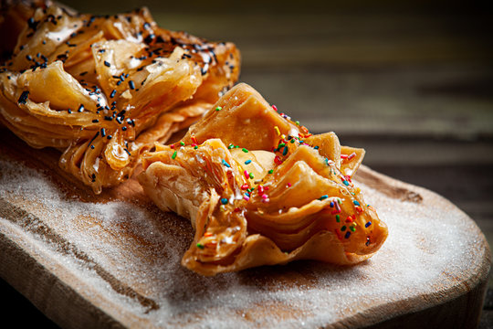

una receta tipica para las fiestas patrias argentinas

los pastelitos de membrillo y de batata son un dulce
tipico argentino hecho de masa frita rellena de esos dulces
cubiertos con almibar
representan una tradicion importante del pais ya que estan
asociados a fiestas patrias como La Revolucion de Mayo y el Dia
de la Independencia Argentina, simbolizando las costumbres criollas,
lo casero y la identidad cultural del pais
Receta de pastelitos
ingredientes
harina
grasa
sal
agua
dulce de membrillo o batata
aceite para freir
almibar
Modo de preparacion
hacer con la harina, grasa,sal y agua una masa
bien dura amasandola bien hasta que quede lisa y suave
al tacto
derretir la grasa e integrarla junto con el aceite, por
otro lado, dividir la masa en dos bollos y estirarlos lo mas
fino posible, luego pintar la masa con el aceite y la grasa
hasta que quede bien cubierto
dejar descansar 20 minutos y luego cortar la masa en
cuadrados parejos
cuando los cuadraditos ya estan listos, ponerle en
medio un cuadrado de dulce en el medio y colocarle otro
cuadrado de masa por encima, apretando bien,pellizcando
cada lado del cuadrado para que no se abra al freir
ahora que es momento de freirlos, colocar en una olla
bastante aceite para lograr que el pastelito se cocinen
uniformemente
una vez fritos y escurridos bañar los pastelitos en
almibar y decorarlos a gusto, con azucar o granas de colores
¡asi deberian escucharse esos pastelitos al freirse!